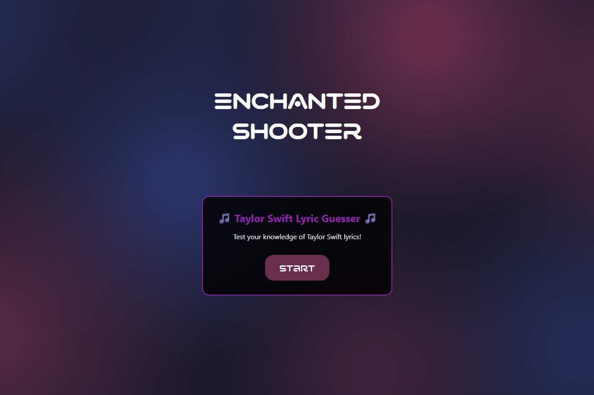
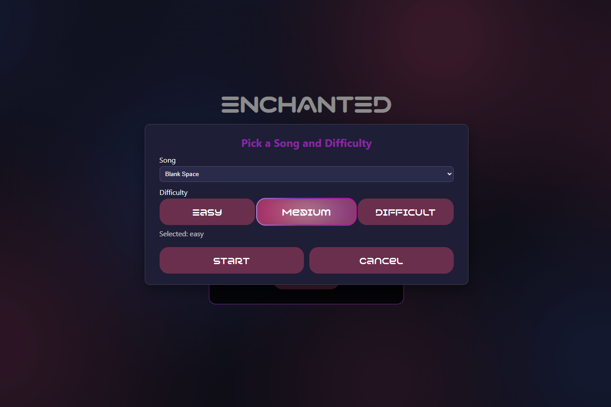
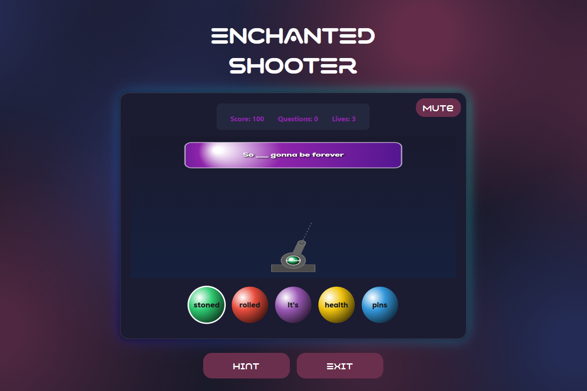
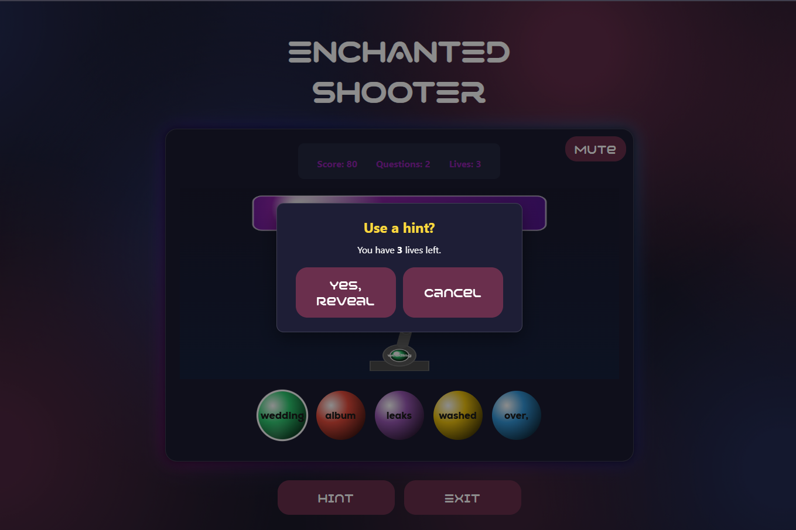
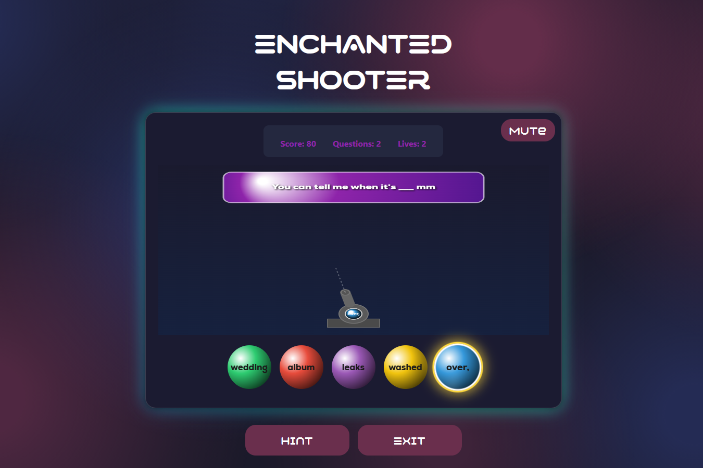
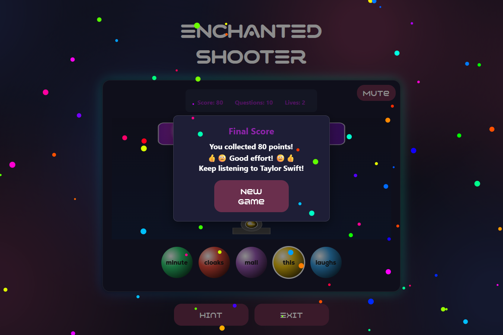

Introduction
Enchanted Shooter is a bubble shooter–style lyric guessing game that uses an N-gram language model trained on Taylor Swift lyrics. Built with Svelte (frontend) and FastAPI (backend), the game combines interactive design and NLP to create an engaging educational + entertainment experience.
Gameplay Flow
1. Song Selection – Player chooses a Taylor Swift song.
2. Difficulty Level – Choose between easy, medium, or hard (controls the lyric gaps and N-gram challenge).
3. Game Start – 10 lyric questions per round.
4. Hints – Up to 3 hints can be used (based on N-gram predictions).
5. Scoring – Starts at 100 points.
- Correct Answer: Full points retained.
- Wrong Answer: -10 points each.
- Maximum score: 100, minimum: 0.
Sample Screenshots






N-Gram Integration
- Corpus: Taylor Swift lyrics.
- Function: Generates predictions for missing words based on N-gram frequencies.
- In-Game Role: Provides hints and influences difficulty.
- Example: If the lyric is “I knew you were ___”, the model predicts likely completions (e.g., “trouble”).
System Architecture
- Frontend (Svelte) – Bubble shooter interface, lyric display, hint requests, score tracking.
- Backend (FastAPI + Python) – Hosts N-gram model, processes requests, returns predictions, and validates answers.
- Flow: Player input → API request → N-gram processing → Prediction/validation → Game update.
Features
- Bubble shooter + lyric guessing combo.
- Difficulty levels that scale with N-gram complexity.
- Hint system powered by NLP predictions.
- Fair scoring with penalties for mistakes.